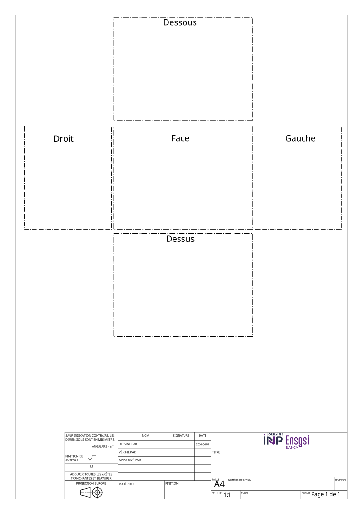
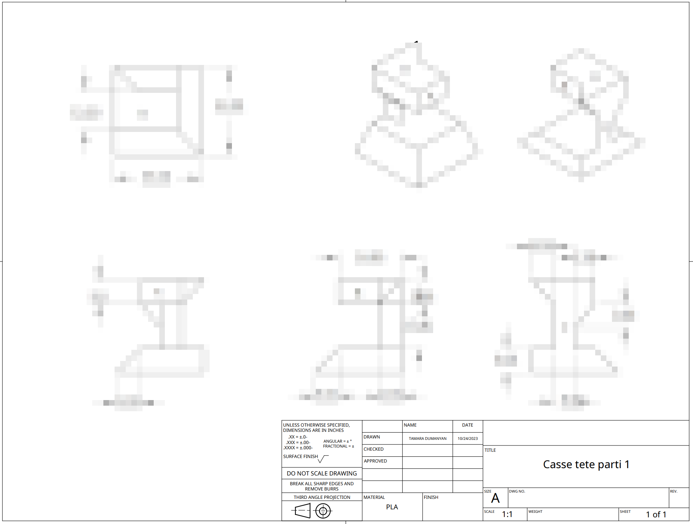

45:00
Conception et Innovation – CI3
TP1: Introduction à conception et dessin assistés par ordinateur (CDAO)
MCF. Fabio Cruz
Université de Lorraine | ENSGSI
2023-05-13
üéØ But de la S√©ance de TP
- Concevoir un dessin techniques à partir d’un pièce donne.
- Réaliser un modèle CAO Pièce à partir d’un dessin technique.
- Réaliser un plan technique à partir du modèle CAO.
Exercices
üîÖ Ex. 1 
Ex. 2
Ex. 4

üî• Ex. 4
Timming
üìÜ Mai 13, 2024 - 13:45 - 17:45
| Temps | Activité |
|---|---|
| 13:45 - 14:00 | Explication du TP |
| 14:00 - 14:45 | Exercice 1 |
| 14:45 - 15:15 | Exercice 2 |
| 15:15 - 15:30 | Break üçé |
| 15:30 - 16:30 | Exercice 3 |
| 16:30 - 17:30 | Exercice 4 |
| 17:30 - 17:45 | Questions |
Exercice 1
But: Concevoir un dessin technique à partir d’un pièce donne.
Exercice 1
But: Faire le dessin technique sur le papier de la pièce que donné.
Important
Le document de l’Ex 1 va être utilisé dans l’exercice 3, car vous allez comparer les documents entre vous pour vérifier la qualité de votre dessin.
- Notéz le code de la pièce et votre prenom dans le cartouche
- Notez votre Prenom et Nom en tant que dessinateur
Exercise 2
But: Réaliser un modèle CAO Pièce à partir d’un dessin technique.
Exercise 2
But: À partir des exercices du TD1 (Vues isometriques), utiliser le logiciel Onshape pour faire les 6 pièces proposés. Chaque carré equivaut à \(10mm\)
45:00
Exercise 3
But: Réaliser le modèle CAO Pièce à partir du dessin technique fait d’un.e de vos collèges.
Exercise 3
But: À partir de l’exercice 1, utilisez le logiciel Onshape pour faire les modèle proposé.
- Identifiez tout les erreurs de cotation que votre collège à fait.
45:00
Exercise 4
But: Réaliser le modèle CAO Pièce et le dessin technique de definition à partir d’un pièce imprimé.
Exercise 4
But: Choisisez une pièce imprimé et faites le modèle CAO et le dessin technique sous onshape.
Ressources / tutoriels
Dessin technique
Historique sur Dessin technique
Capsule sur le dessin technique par l’Université Numerique
Introduction à Onshape
Compte Onshape
- Ouvrez une compte sur https://www.onshape.com/fr/
- Utilisez votre email de l’Université de Lorraine
Cela permmetra d’avoir la configuration “Student”
Configuration
- Click on ‘votre nom’ > my account
- Configurez votre compte en langue ‘Français’
- Utilisez l’unité par défaut de Longueur en Millimèters: \(mm\)
Introduction
à la interface
Voilà aperçue de l’interface
Button Create afin de un document
Creation d’un
document
Voilà aperçue de l’interface
Button Create afin de un document
L’Esquisse
- Esquisse (Sketch en anglais) est le premiers pas vers la modélisation
⚠️ Regardez les sections 01, 02, 03 et 05 du tutoriel suivant:
Part
- Création volumique (Features en anglais)
Dessin technique
- Création volumique (Drawing en anglais)
Attention:
- Utilisez la projection ‘Third Angle (ANSI)’
- Format A4.
üé• Tutoriel pour la Cr√©ation d‚Äôun dessin technique sous onshape
⚠️ Regardez les sections 01, et 02 du tutoriel
Questions?

Comment réaliser un dessin de définition conformément aux normes ISO?
Capsule sur le dessin technique par l’Université Numerique